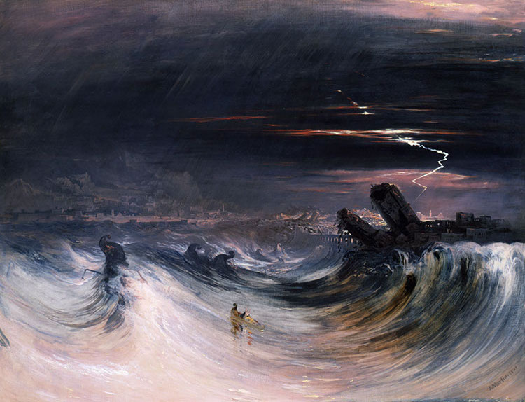
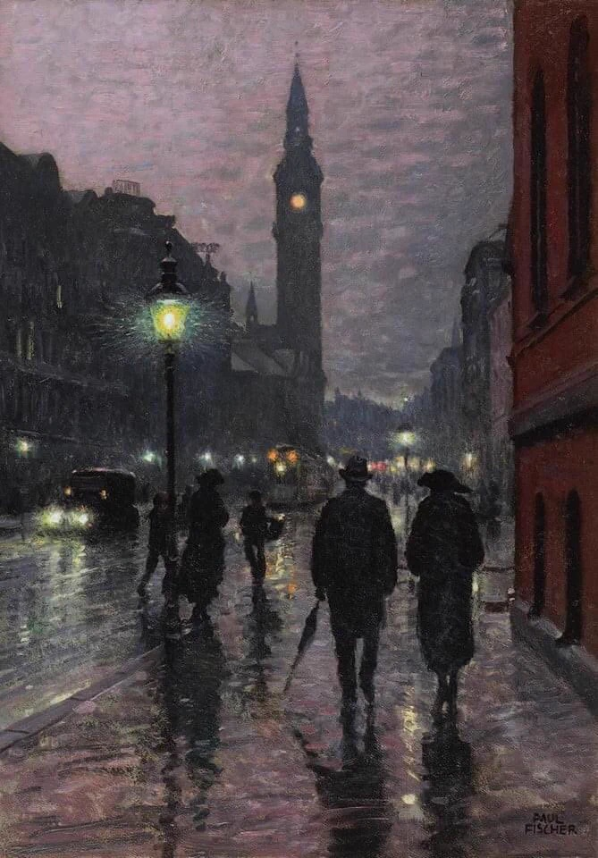
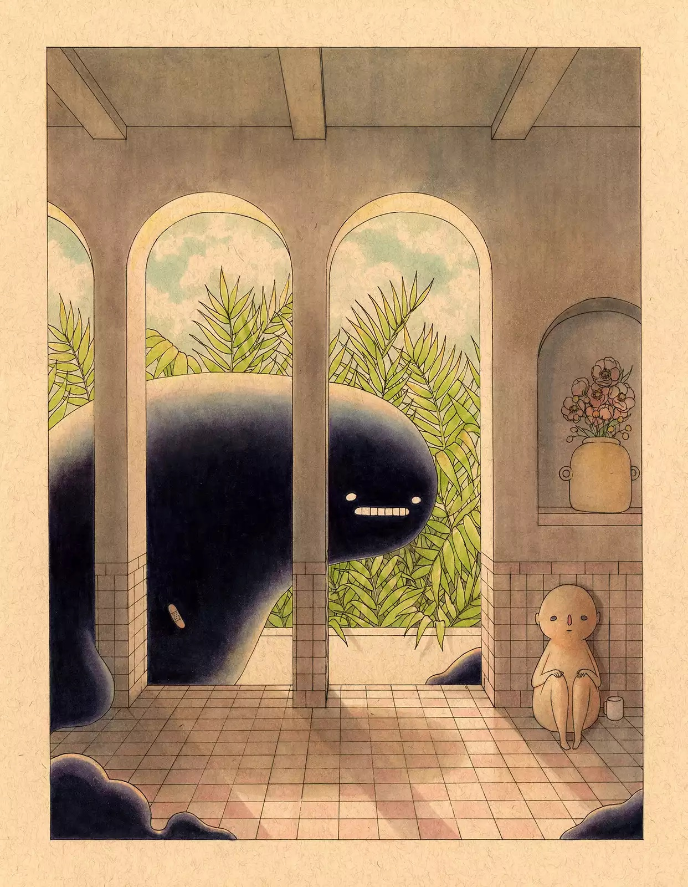

Nice Artwork :)

I found this painting while scrolling IG, I was really drawn to it because of the colors, I like the blue, pink and yellow which are usually bright and happy colors, however in this painting they're used to depict a storm
Evening, West Rampart

I like this painting because it conveys a mood, it gives a feeling of a slow sunday evening on a rainy day, something about that atmosphere is very calming to me.
Felicia Chiao "Untitled"

This is another piece of art I found on IG, I'm a huge fan of Felicia Chiao, all of her art is in this style and it's a very unique style, I interpret this image as looming anxiety and how certain anxious feelings can literally feel like a monster looking for you at times